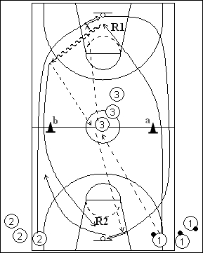

Catégorie : FASTBREAK (Fb-011)
Déroulement
- Deux files de joueurs aux extrémités d’une baseline, dont une file avec ballons (1). Une troisième file dans le cercle central.
- Le premier joueur de la file 3 sert de relais. Le premier joueur de la file 1 lui passe le ballon. Le premier joueur de la file 3 prolonge vers le premier joueur de la file 2 qui est passé derrière le cône b et réalise le lay-up. Le premier joueur de la file 1 contourne le cône a, réalise le rebond, dribble passe au premier joueur de la file 3 et sprinte derrière le cône b vers le panneau adverse. Le premier joueur de la file 2 a également sprinté derrière le cône a pour effectuer le lay-up au panneau opposé. Effectuer deux fois le même circuit, le quatrième rebond étant pris par 3.
- Après son quatrième lay-up, 2 va dans la file 3. 3 qui a réalisé le quatrième rebond va en 1 et 1 va en 2.
Coaching points
- Dans cette disposition, tous les lay-ups sont réalisés à gauche. Après un certain temps, changer les files 1 et 2.
- Insister sur la précision des passes et la vitesse d’exécution.